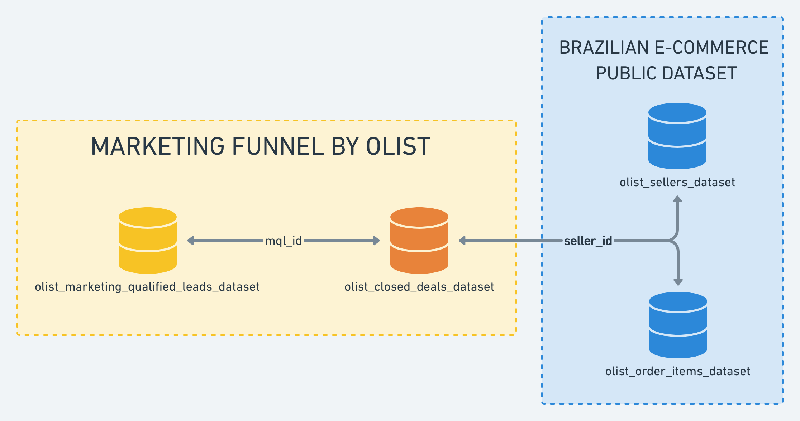
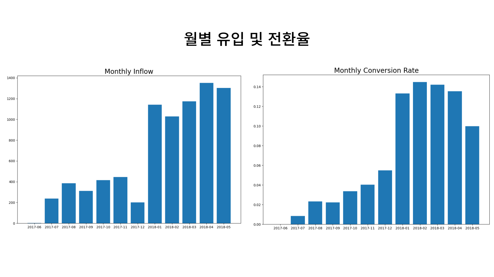
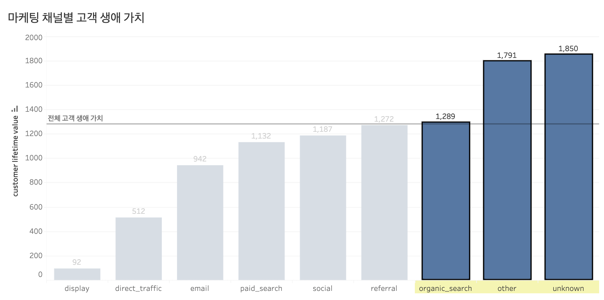
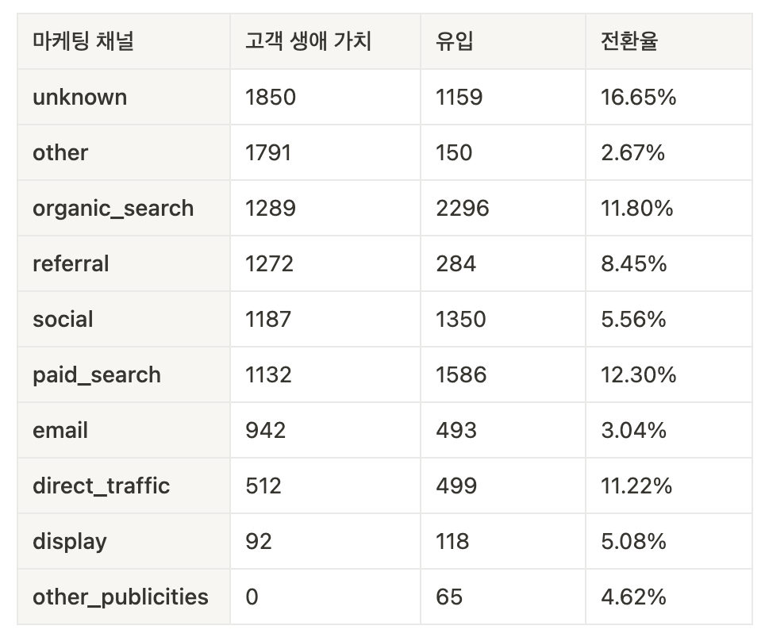
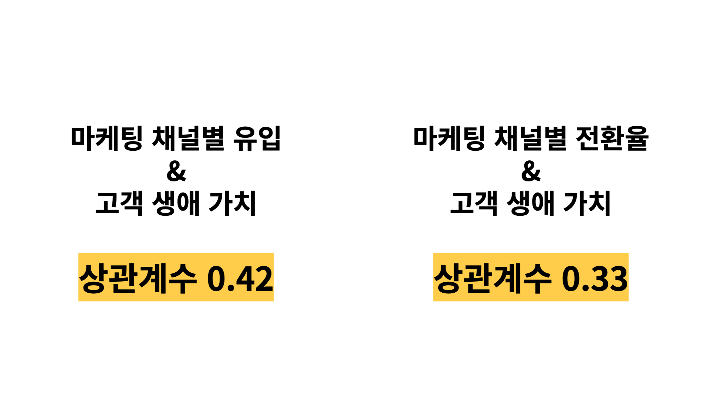
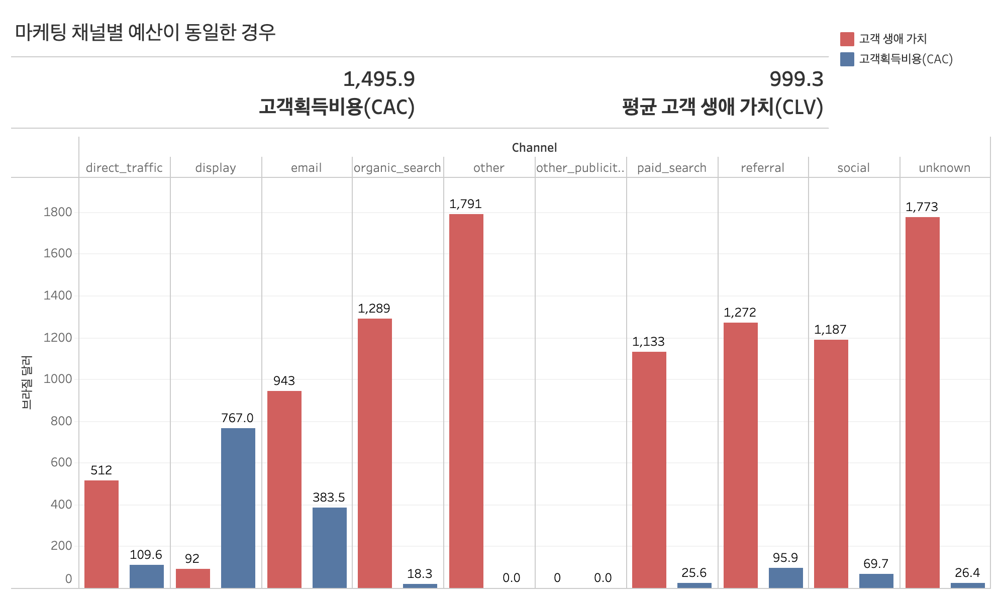
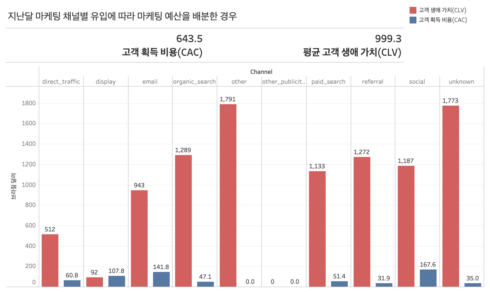
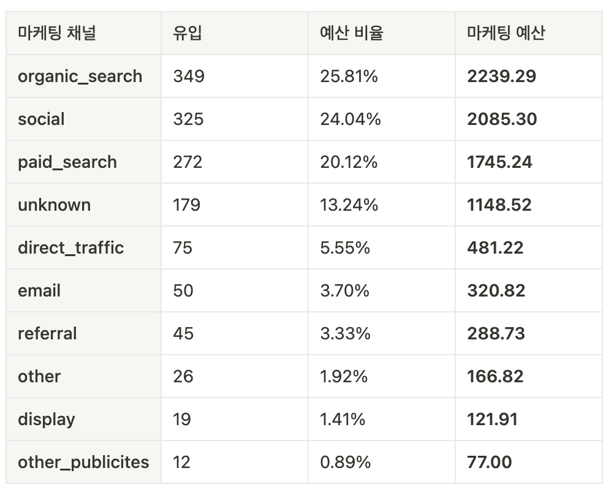

마케팅 채널별 고객 생애 가치 분석
INTRO
DATA / 문제정의 / 프로젝트 목표 / 가설 / 개념정리
데이터 분석
EDA / 데이터 분석 / 데이터 분석 결과
결론
결론 / 프로젝트 회고 / 참고 자료
프로젝트 분석 코드
INTRO
1. DATA
💡 데이터
- Kaggle에 존재하는 Olist Marketing Funnel 데이터와 Brazilian E-commerce(olist) Public 데이터를 사용했습니다.

💡 데이터 설명
- Olist Marketing Funnel Data
- olist_marketing_qualified_leads_dataset : 마케팅 채널 데이터
- olist_closed_deals_dataset : 판매자의 플랫폼 결제(입점) 데이터
- Brazilian E-commerce(olist) Public Data
- olist_sellers_dataset : 플랫폼 내 판매자 데이터
- olist_order_items_dataset : 상품 주문 데이터
💡 데이터 선정 이유
- 팀 프로젝트로 '이커머스 매출 증대를 위한 데이터 분석' 프로젝트를 진행했습니다. 해당 프로젝트에서 플랫폼의 마케팅 채널에 대한 분석을 하였고, 마케팅 채널에 대한 추가적인 분석을 하기 위한 팀 프로젝트에서 사용했던 데이터를 이용했습니다(팀 프로젝트 바로가기).
- 마케팅 채널에 대한 데이터와 고객 구매 데이터가 존재하여 고객 생애 가치(CLV)를 분석하기에 용이할 것으로 판단했습니다.
2. 문제정의
💡 문제 상황

- 월별 유입데이터를 확인해보면 2018년 1월에 비해 2018년 5월에 유입이 증가한 것을 확인할 수 있습니다.
- 2018년도의 날짜와 유입의 상관계수를 살펴보면 0.15로 유입이 증가하고 있지만, 증가의 정도가 약한 것을 알 수 있습니다.
- 2018년 2월부터 전환율이 감소하고 있으며, 5월에 급격한 전환율의 감소가 확인됩니다.
💡 문제 정의
- 마케팅 예산이 한정되어 있는데, 유입이 조금씩 증가하면서 전환율이 감소하면 고객 획득 비용(CAC)이 증가하게 됩니다.
- 고객 획득 비용(CAC)이 증가하면 장기적으로 기업의 수익이 감소하기 때문에 각 마케팅 채널에서 사용되는 불필요한 비용을 줄여야 합니다.
3. 프로젝트 목표
💡 프로젝트 목표
- 고객 획득 비용(CAC)을 낮추기 위해 마케팅 채널별 고객 획득 비용(CAC)과 고객 생애 가치(CLV)를 비교하여 각 마케팅 채널의 예산을 산정합니다.
💡 프로젝트 기대 효과
- 고객 획득 비용(CAC)과 고객 생애 가치(CLV)에 대한 분석을 통해 기업은 다음과 같은 기대효과를 얻을 수 있습니다.
- 기업은 불필요한 마케팅 비용을 줄이고 효율적인 마케팅을 위한 전략을 수립할 수 있습니다.
- 기업은 고객 생애 가치(CLV)가 높은 고객군을 발굴하여 혜택을 제공함으로써 고객 유지율을 높일 수 있습니다.
4. 가설
- 마케팅 채널의 유입이 많고, 전환율이 높을수록 고객 생애 가치(CLV)가 높을 것입니다.
- 마케팅 채널에 따라 유입되는 고객의 특성이 다르기 때문에 해당 마케팅 채널을 이용한 고객 생애 가치(CLV)도 다를 것이라 예상됩니다.
- 유입과 전환율이 낮은 마케팅 채널에 많은 마케팅 예산을 산정했을 때, 고객 생애 가치(CLV)보다 고객 획득 비용(CAC)이 높을 것이라 예상됩니다.
5. 개념정리
💡 고객 생애 가치(Customer Lifetime Value, CLV)
- 단일 고객 계정에서 기대할 수 있는 총 수익을 나타내는 지표
- 고객의 수익가치를 고려하여 예상되는 고객 수명과 비교
- 기업은 고객 생애 가치 지표를 사용하여 가장 중요한 고객 세그먼트 확인 가능
💡 고객 획득 비용(Cost of Customer Acquisition, CAC)
- 잠재 고객이 자사의 제품 또는 서비스를 구매하도록 유도하는데 들어가는 비용
데이터 분석
1. EDA
💡 데이터 전처리
- 마케팅 채널의 결측치는 채널을 알 수 없기 때문에 'unknown'으로 대체합니다.
- 주문 건수와 주문 건당 매출을 판매자ID, 배송 기한 기준으로 묶어서 판매자의 월 매출로 계산합니다.
- 판매자의 월 매출에 입점 수수료(8%)를 곱하여 플랫폼 수익을 나타내는 컬럼을 생성하고 월 매출 데이터가 없어 수익을 나타낼 수 없다면 '0'으로 표시합니다.
- 거래가 없어 배송기한이 없는 경우, 빈 데이터를 2022년 12월 31일로 대체합니다.
- 배송 기한을 연도와 월만 표시하는 컬럼을 생성합니다.
💡 고객 생애 가치(CLV) 및 고객 획득 비용(CAC) 계산
- 고객 생애 가치(CLV) 계산
- 평균 구매 가치 = 전체 기간의 수익 평균
- 평균 구매 빈도율 = 총 주문 건수 / 중복이 없는 판매자 수
- 고객 가치 = 평균 구매 가치 * 평균 구매 빈도율
- 평균 구매 수명 = (판매자별 첫 판매일 - 판매자별 마지막 판매일)의 평균
- 고객 생애 가치(CLV) = 고객 가치 * 평균 고객 수명
- 고객 획득 비용(CAC) 계산
- 고객 획득 비용(CAC) = 마케팅 비용 / 등록한 판매자 수
2. 데이터 분석
💡 마케팅 채널별 고객 생애 가치(CLV)

- 전체 고객 생애 가치(CLV) 1281.70 브라질 달러이고, 전체 고객 생애 가치(CLV)보다 고객 생애 가치(CLV)가 높은 채널은 organic_search, other, unknown입니다.
- 마케팅 채널별로 고객 생애 가치(CLV), 유입, 전환율을 확인해보면 다음 표와 같습니다.
- 고객 생애 가치, 유입, 전환율이 모두 상위 3개 안에 있는 마케팅 채널은 unknown, organic_search입니다.
- 마케팅 채널별 유입, 전환율과 고객 생애 가치(CLV) 사이에 약한 양의 상관관계가 있다고 볼 수 있습니다. 즉, 마케팅 채널별 유입이 많고, 전환율이 높을수록 고객 생애 가치(CLV)가 높을 것으로 추측할 수 있습니다.


💡 마케팅 채널별 신규 고객 획득 비용(CAC)
- 불필요한 마케팅 비용을 줄이기 위해서는 고객 획득 비용(CAC)이 고객 생애 가치(CLV)보다 낮아야 합니다. 그래서 AB 테스트를 통해 고객 획득 비용(CAC)를 줄일 수 있는 방법을 찾고자 합니다.
- 2018년 6월의 마케팅 채널별 예산을 산정하기 위해 2018년 5월의 유입 데이터를 사용하여 아래의 AB 테스트를 진행했습니다.
- 마케팅 채널별 유입이 전환율보다 고객 생애 가치와 높은 상관성을 지니고 있기 때문에 마케팅 예산을 산정할 때, 지난달의 마케팅 채널별 유입을 b안으로 설정하였습니다.
a) 모든 마케팅 채널의 예산이 동일한 경우
b) 지난달 마케팅 채널별 유입에 따라 마케팅 예산에 차이를 둔 경우
A) 모든 마케팅 채널의 예산이 동일한 경우

- 고객 획득 비용(CAC)의 합계는 1,495.9 브라질 달러로 평균 고객 생애 가치(CLV)인 999.3 브라질 달러보다 높은 것을 확인할 수 있습니다.
- Display 채널은 고객 획득 비용(CAC)이 고객 생애 가치(CLV)보다 약 8배 많으며, email과 direct_traffic 채널의 고객 획득 비용(CAC)는 고객 생애 가치(CLV)의 약 41%, 21%를 차지하고 있습니다.
- Other, other_publicities 채널의 경우, 결제를 진행한 고객이 없기 때문에 고객 획득 비용(CAC)이 존재하지 않습니다.
B) 지난달 마케팅 채널별 유입에 따라 마케팅 예산을 배분한 경우

- 고객 획득 비용(CAC)의 합계는 643.9 브라질 달러로 평균 고객 생애 가치(CLV)인 999.3 브라질 달러보다 낮은 것을 확인할 수 있습니다.
- 지난달의 채널별 유입에 따라 마케팅 예산을 결정할 경우, 모든 마케팅 채널의 예산이 동일할 때보다 direct_traffic, display, email, referral 채널에서 고객 획득 비용(CAC)이 45%, 86%, 60%, 67% 정도 감소했습니다.
3. 데이터 분석 결과
- 데이터 분석을 통해 위에서 정의한 가설을 확인할 수 있었습니다.
- 고객 생애 가치(CLV)는 고객이 기업에 얼마나 많은 수익을 가져다 주는지 확인하는 지표이기 때문에 마케팅 예산을 결정할 때, 고객 획득 비용(CAC)이 고객 생애 가치(CLV)보다 높으면 기업은 손해를 입게 됩니다. 그래서 고객 획득 비용(CAC)은 고객 생애 가치(CLV)보다 낮아야 합니다.
- 데이터 분석 결과, 마케팅 예산을 모든 채널에 동일하게 배분했을 때보다 채널별 유입에 따라 마케팅 예산에 차이를 주었을 때 총 고객 획득 비용(CAC)이 더 저렴한 사실을 알 수 있습니다.
가설 1)
마케팅 채널의 유입이 많고, 전환율이 높을수록 고객 생애 가치(CLV)가 높을 것입니다.
⇒ 마케팅 채널별 유입, 전환율을 고객 생애 가치(CLV)와 상관분석을 해본 결과, 상관계수가 각각 0.42, 0.33이 나왔습니다. 이를 통해 유입과 전환율이 고객 생애 가치(CLV)와 약한 양의 상관관계를 가지고 있다는 것을 알 수 있습니다.
가설 2)
유입과 전환율이 낮은 마케팅 채널에 많은 마케팅 예산을 산정했을 때, 고객 생애 가치(CLV)보다 고객 획득 비용(CAC)가
높을 것이라 예상됩니다.
⇒ 유입이 낮은 마케팅 채널과 유입이 많은 마케팅 채널에 동일한 마케팅 예산을 산정하면 고객 획득 비용(CAC)가 고객 생애 가치(CLV)보다 높은 것을 확인할 수 있었습니다. 반면 마케팅 채널별로 마케팅 예산을 다르게 산정하면 고객 획득 비용(CAC)가 고객 생애 가치(CLV)보다 낮은 것을 확인할 수 있었습니다.
결론
1. 결론
- 유입이 많은 마케팅 채널에서 공격적으로 마케팅을 진행하면 고객 생애 가치(CLV)가 높은 고객들을 모집할 수 있습니다. 그리고 유입이 낮은 마케팅 채널에 마케팅 비용을 적게 사용하여 고객 획득 비용(CAC)를 줄일 수 있습니다.
- 2018년 6월의 마케팅 예산(8674.85 브라질 달러)을 2018년 5월 마케팅 채널별 유입을 기준으로 결정하면 다음 표와 같습니다.
- 고객 생애 가치(CLV)가 높은 고객군인 organic_search를 통해 유입된 고객에게 프리미엄 혜택을 제공하면 고객 유지율 및 브랜드 충성도를 높일 수 있습니다.

2. 프로젝트 회고
💡 긍정적인 부분
- 머리로만 알고 있던 고객 생애 가치(CLV)와 고객 획득 비용(CAC)에 대한 개념을 다시 정리할 수 있었고, 실제로 데이터에 적용함으로써 고객 생애 가치(CLV)에 대해 잘 이해핼 수 있었습니다.
- 통계적 데이터 분석 방법인 상관분석과 AB 테스트를 이용하여 프로젝트를 진행하였습니다.
💡 한계점
- Olist Marketing Funnel Data에 재방문 데이터, 체류시간, 검색 키워드 등 플랫폼에 유입된 고객 행동과 관련된 데이터가 존재하지 않아서 마케팅 채널에 대한 세부적인 분석이 어려웠습니다.
- 마케팅 예산을 산정할 때, 기준을 유입만 놓고 계산하여 전환율과 같은 다른 요인을 고려하지 못한 점이 아쉽습니다.
💡 개선 사항
- 채널별 마케팅 예산을 결정하기 위해 유입 외에 고객 생애 가치(CLV)에 영향을 주는 다른 요인을 발견하여 적용한다면 보다 정확한 기준을 세울 수 있습니다.
3. 참고자료
- 고객 생애 가치(CLV) 계산 방법과 스타벅스의 예시(출처 : 오픈애즈 / 링크 )
- 고객 획득 비용 공식과 최적화 방식(출처 : Digital Marketing Curation / 링크 )
- 마케팅 예산, 어떻게 계획할까?(출처 : 콘텐타M / 링크 )
- 쿠팡 마켓플레이스 카테고리별 판매 수수료(출처 : 쿠팡 마켓플레이스 / 링크 )
Projects 페이지로 돌아가기(Link)